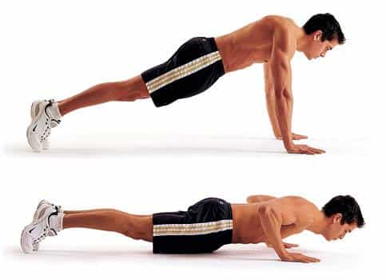

A few years ago, in the wake of a break-up that left me terribly depressed, I decided to set a tough goal for myself and work toward it as a way to lift my spirits. I was previously an experienced martial artist and for a while had even run my own school, but in my role as an engineer over the ensuing years, I had allowed my conditioning to lapse severely.
My goal was simple: to successfully compete in sport karate sparring at a black belt level. I ultimately achieved my goal, and this article is meant to help guys who, like myself, want to go from zero to hero while living a demanding life.
Commercial gym? Not an option
My plan was complicated by a highly demanding job that has me on-call 24x7x365, the demands of a teen daughter, and a 2.5 hour commute each way. I most certainly did not want to spend an hour a day driving to and from the gym, plus another hour at the gym. And that planned hour always seems to turn into much longer, when the flow of your workout is interrupted by someone indefinitely monopolizing a machine you were planning to use.
I had also, at one point, contracted a MRSA (methicillin-resistant staphylococcus aureus) infection from improperly wiped-down gym gear, which put me into life-threatening shock when the boil broke inside me. Another detractor from the gym was my previous experience with contracts. I discovered when trying to sign up for one gym that somehow they owned a “debt” I allegedly owed to some other gym. Good luck straightening that mess out!
The bodyweight solution
I found the solution to the problems of time, expense, risk and annoyance in bodyweight exercise (calisthenics). Not only is bodyweight exercise something I can do at home, it works so well that even though I am a middle-aged man in a sedentary job, I have since garnered trophies and medals in karate sparring.
Bodyweight exercises are ideal for men like me with a lot of demands on their time. My average workout takes between 25 and 40 minutes, plus zero drive time and zero MRSA from the weight machines that weren’t properly wiped.
Can bodyweight exercise be effective? It depends on your goal. If you are looking for bodybuilder-like hypertrophy and single-muscle isolation, you’ll need a gym, but if you are looking to lose fat, gain functional strength and flexibility, and maintain solid endurance, it will work just fine. America’s military trains for the rigors of combat using bodyweight exercise, and it will work for you too.
The same principles and ideas that are applied in the gym are also applied to bodyweight exercise. The only difference is that you are using your own body as resistance, and you vary the resistance by changing your point of leverage. For example, a push up done against a wall might be about 20 pounds, while a push up at 45 degrees would be 50 pounds and a push up with your feet elevated on a chair would be 100 pounds.
The same can be applied to leg exercises: a bodyweight squat only puts half of your bodyweight on each leg, but a Bulgarian split squat puts about 90% of your bodyweight on each leg—and it is the rare individual who can do a one-leg squat. So you can get plenty of resistance to build strength with just your body. The only piece of gear I’d add is a suspension trainer. You don’t need a fancy one.
In addition to progressive resistance, which is used to develop strength, you can also shorten rest periods to create HIIT (High Intensity Interval Training) workouts, or even Tabatas with practically any exercise. These have been proven to increase endurance better than endless cardio on the lines of machines at the gym.

Start with bodyweight circuit training
For people first starting out, I recommend circuit training as a way of improving overall health in minimal time. Choose five exercises: one push, one pull, one core, one legs, and one cardio. Proceed directly from one exercise to the next without rest. Then, wait a period of time, and repeat. Start off with three circuits, and three minutes of rest between each circuit. Do a variation of each exercise that will let you complete ten reps without it being either too easy or pushing you near failure.
Here is an example: do 10 push ups, 10 inverted rows, 10 crunches, 10 air squats, and 10 jumping jacks without taking a rest. Then rest three minutes and repeat for a total of three cycles. If you can’t do ten push ups, just elevate your hands onto a chair. If a full inverted row is too hard, then move your heels back toward your body until you can do it. Do this same workout on Monday, Wednesday and Friday. It will only take twenty minutes.
The next week, repeat the same workout, except allowing only 2:30 rest between cycles. The third week, drop it to 2:00 between cycles. On the fourth week, increase the rest back to 2:30, but add a fourth cycle. The fifth week, decrease the rest to 2:00. The sixth week, decrease the rest to 1:30. The seventh week, increase the rest to 2:00 and add a fifth cycle. On week eight, cut the rest to 1:30 and on week nine, cut the rest to 1:00.
It is normal for beginners to see large apparent leaps in strength. This is caused by improvements in neurological recruitment. That is, your nerves become more adept at activating muscle fibers. When this happens, just slightly increase the difficulty of each exercise so that it becomes more challenging.
At the end of nine weeks, you’ll be doing 50 reps of each exercise in less than 30 minutes, which is a respectable workout, and you’ll be ready for the next stage of training.
After the circuit training prep-phase
For the next stage, I recommend the book You Are Your Own Gym by Mark Lauren. There is also a smart phone application by the same author that works well. Start with the “Basic” guided program.
This is a program that changes every two weeks to create a total 10-week cycle that will see you constantly improving. And, again, every workout will take less than forty minutes at home.
To be ready for competitive karate, I first did nine weeks of circuit training, and then worked through the ten week “basic” program and the ten week “intermediate” program. So it took about half a year. But that’s half a year to go from “winded walking up the stairs” to “kicking other in-shape men in the head.” You might not need to go that far.

Fixing problems from a sedentary job
Along the way, I hit some snags caused by too much time sitting at a desk. To work through these, I used the exercises provided by Sean Schniederjan’s Cure Tight Hips Anywhere, Posterior Chain Linked, Anterior Chain Linked, and Quadratus Lumborum: Fixed Depending on how badly your muscles are imbalanced, you may not need these. But I used them to great affect and recommend them.
What started as self-therapy for a break-up has made me healthier, happier and more confident. Not long after achieving my first milestone, there were plenty of other candidates to replace the girl left behind.
Read More: How To Get An Intense Cardio Workout In Only 20 Minutes